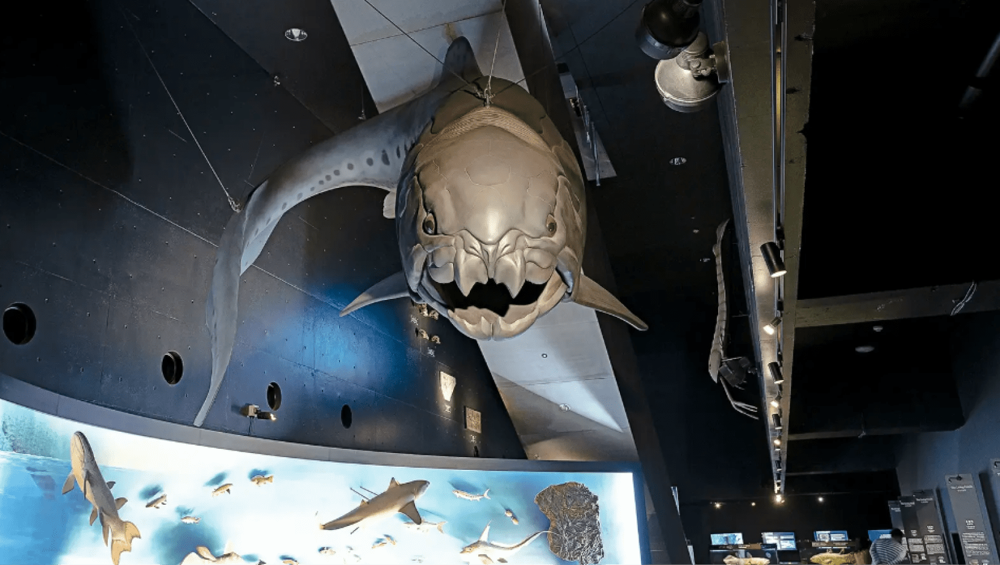

福島の海と生き物たちを知る
福島の海洋環境を学びながら、震災からの再生ストーリーを知る。
東北で最大規模を誇る水族館「環境水族館 アクアマリンふくしま」。東日本大震災による甚大な被害によって、多くの生き物たちを失いました。しかし関係者やボランティアたちの懸命な努力によって、水族館は再生を果たしたのです。
環境水族館アクアマリンふくしま
生き物が生息する自然環境を再現
福島の海は、2つの海流が交わるところです。日本の南沿岸を通り、カツオやマグロなど、多くの魚たちが北上してくる「黒潮」。そして、千島列島沿いに南下する、栄養塩類が豊富なため、生き物を育む、文字通り“海の親”である「親潮」……この2つが福島県沖で出会い、豊かな「潮目の海」を作っているのです。 「アクアマリンふくしま」では、この「福島県の海」をテーマとしています。三角形のアクリルトンネルを挟んで左が親潮水槽、右が黒潮水槽となっていて、水量も2050トンと東北最大級。トンネルから見上げると、魚たちの群れと一体化したかのように、潮目の海を体感できます。他にも、屋外には里山の水辺「BIOBIOかっぱの里」や、干潟や磯浜の「蛇の目ビーチ」など、環境を再現したエリアが充実しており、自然を体感的に理解できることが特徴です。
デボン紀の海に生息していた巨大魚「ダンクルオステウス」が出迎える、1階の「海・生命の進化」エリア
各地の水族館の連携が災害から生き物の命を救った
2011年3月11日、地震にともなう津波で、水族館の機能は完全に麻痺してしまいました。水槽等の損傷だけではありません。水没により電気、ガス、水道が停止。 特に、電気は、水槽の水質・水温の維持、酸素の供給に必要で、生き物たちの命綱です。7日目には非常用電源の燃料も切れ、飼育員たちの目の前で多くの生き物たちが次々と命を落として行きました。流出した生物もふくめると、その数約20万匹に及びます。 しかし、地震直後からの再起に向けての行動は早かったです。ユーラシアカワウソやトド、ゴマフアザラシなどの海獣、海鳥、カブトガニやオオサンショウウオ、ハイギョなどの生物は、原発事故の渦中、東京や千葉、神奈川、静岡、新潟の水族館や動物園へと速やかに避難。そして関係者やボランティアの懸命の努力により、4か月後の2011年7月15日には再オープンに至ります。漁業者や他水族館から生物の提供など、多くの協力をいただいため、早期に再オープンできました。 現在は約800種類の生き物を飼育しており、震災時にどのように職員たちが行動し、再オープンまでたどり着いたのかを写真や動画を見ながら学べる、震災学習プログラムも実施しています。